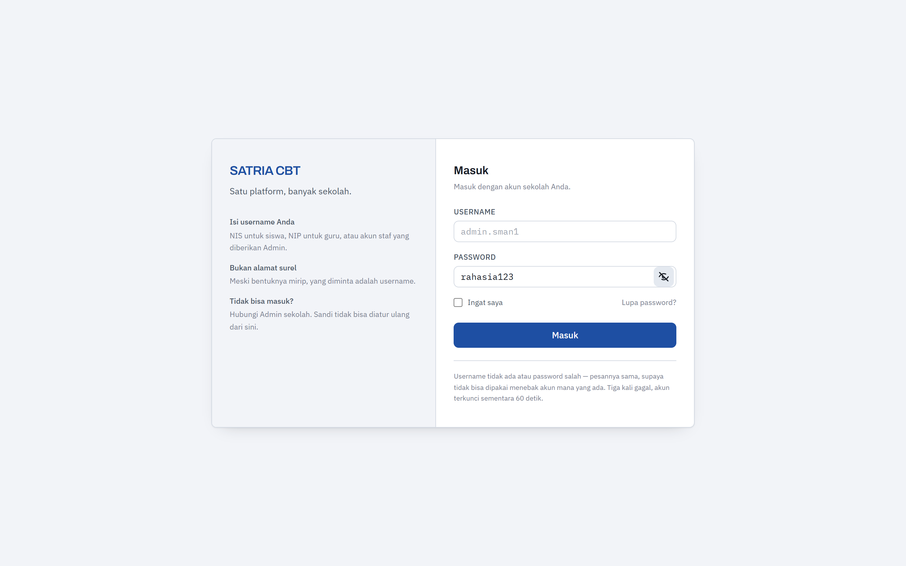

1. Masuk & beranda
Akun Admin dibuatkan sekolah. Tidak ada pendaftaran mandiri, dan tidak ada tautan aktivasi.
Seluruh peran masuk lewat layar yang sama. Aplikasi yang menentukan ke mana Anda diarahkan sesudahnya — Admin mendarat di ringkasan sekolah, bukan di daftar event.
-
Buka alamat aplikasi. Layar pertama meminta dua hal: username dan sandi.

Isi username yang diberikan sekolah — bukan alamat surel, meskipun bentuknya mirip. -
Tekan Masuk. Anda akan diarahkan ke Ringkasan sekolah.
Bila sandi tidak terbaca
Tombol bergambar mata di dalam kolom sandi menampilkan isinya sementara. Sandi tetap tersembunyi secara bawaan — tombol itu hanya untuk memeriksa apa yang baru saja diketik.

Apa yang dikatakan beranda
Beranda menjawab satu pertanyaan: apa yang sedang berjalan hari ini? Tiga bagiannya diurutkan sesuai kepentingan.

Di ponsel
Pada layar sempit, kartu keterangan menyusut menjadi kepala, dan formulirnya naik sehingga kedua kolom isian dan tombol Masuk terbaca tanpa menggulir.

Event berjalan
Bagian ini hanya menampilkan event yang statusnya masih aktif. Event yang sudah selesai atau diarsipkan tidak muncul di sini — dan itu disengaja: beranda yang menampilkan event selesai membuat Admin membuka kegiatan yang sudah tidak berjalan.
Event aktif di sidebar
Perhatikan kotak biru di sidebar kiri: Event aktif. Sekali Anda membuka sebuah event, ia tertinggal di situ, dan seluruh menu event (Kepanitiaan, Peserta, Jadwal, dan seterusnya) berbicara tentang event itu. Berpindah event berarti kembali ke Daftar event lalu memilih yang lain.
Yang paling sering dibuka
Daftar pintasan ini dihitung dari riwayat pemakaian, bukan dipilih manual. Pada sekolah yang baru dipasang, daftarnya masih pendek — itu wajar.